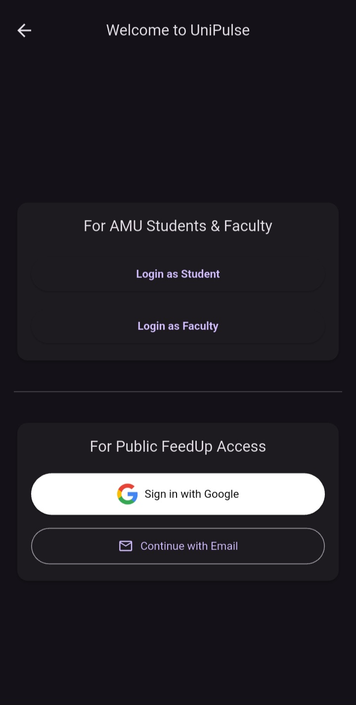
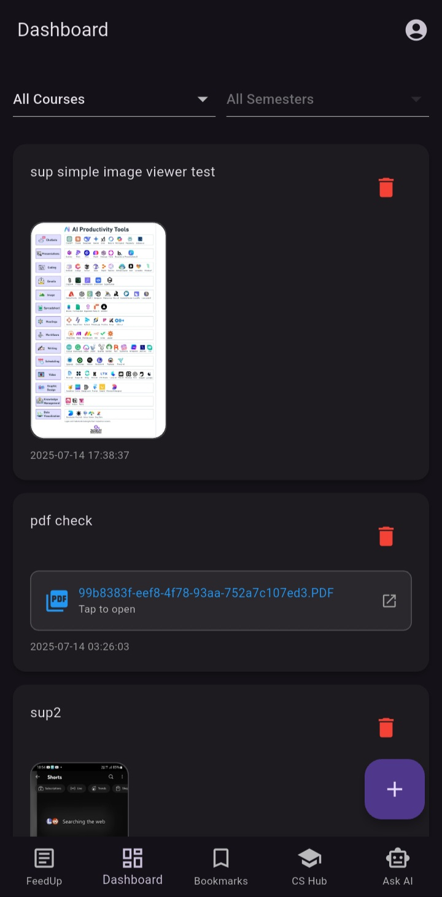
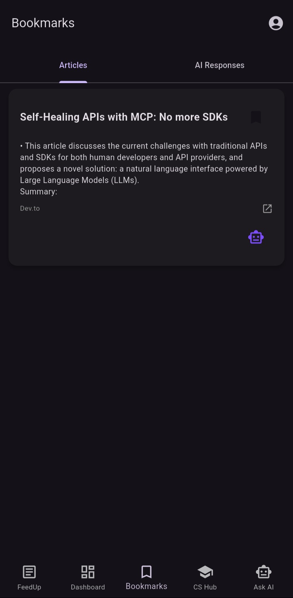
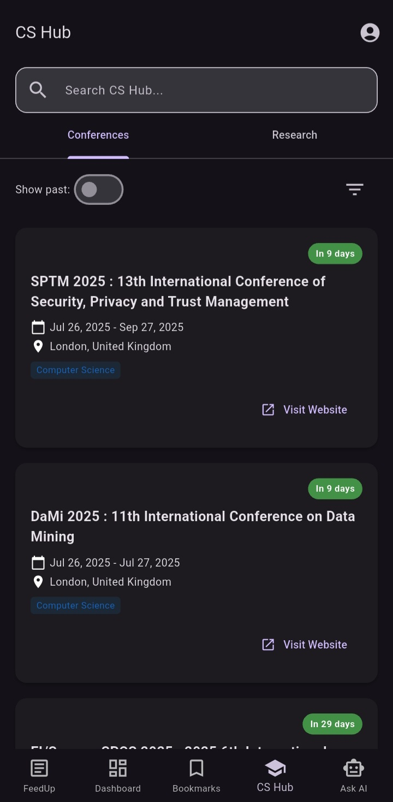

Key Features
Role-Based Dashboards
Tailored interfaces for students and faculty, ensuring the right content is delivered to the right people efficiently.
Offline-First Architecture
Guarantees uninterrupted access to critical academic information and app features, regardless of network connectivity.
AI-Powered Assistance
An integrated "Ask AI" feature using Google Gemini provides intelligent content assistance and personalized knowledge management.
FeedUp Microapp
An innovative content aggregation module that serves as a strategic user acquisition channel by providing value to the broader tech community.
Screenshots




Technology Stack
- Flutter
- Django REST Framework
- PostgreSQL
- Supabase
- Google Gemini API
- JWT & OTP Authentication